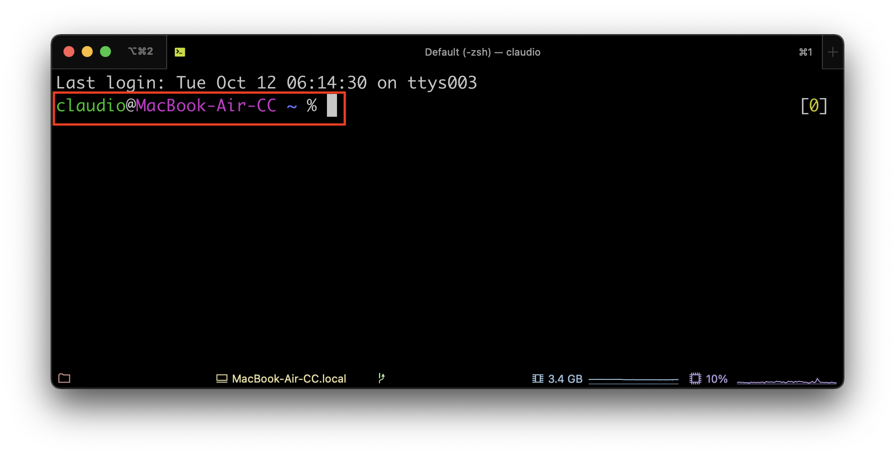
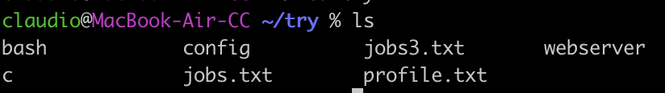
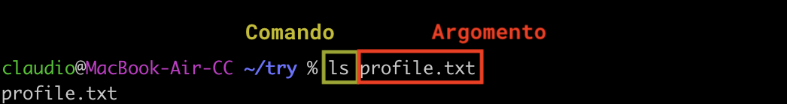
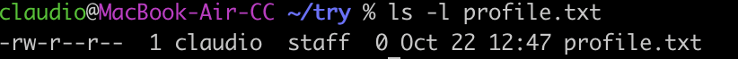

Uso della shell
Apriamo il nostro terminale e cominciamo a prendere confidenza con le varie componenti.
Prompt dei comandi
Appena aperto il terminale, notiamo che compare subito una stringa di testo che ci dà varie informazioni. Questa stringa si chiama prompt dei comandi, o semplicemente prompt.

Di solito il prompt contiene:
- il nome dell'utente corrente
- il nome della macchina su cui ci troviamo
- la cartella in cui ci troviamo
- il simbolo $ oppure % che precede il cursore di inserimento
L'interprete dei comandi
Dopo il prompt possiamo inserire il nostro comando, ad esempio per visualizzare i file nella cartella corrente, possiamo usare ls.

Vediamo cosa è successo dietro le quinte:
- la stringa che scriviamo, in questo caso
ls, viene passata all'interprete dei comandi, ovvero la "shell" vera e propria - la shell interpreta il comando e fa le chiamate di sistema necessarie al kernel
- ritorna su schermo l'output del comando
Comando, argomenti e opzioni
Il comando vero e proprio è sempre la parola che viene scritta subito dopo il prompt. Un comando può opzionalmente essere seguito da degli argomenti, separati da spazi.
Ad esempio, ls nomefile mostra solo il file specificato nell'argomento.

Se l'argomento comincia con un trattino, prende il nome di opzione. Un'opzione serve per modificare il funzionamento del comando in qualche modo.
Ad esempio, l'opzione -l del comando ls mostra più dettagli sui file.

Un'opzione che comincia con un singolo trattino (-) è detta "short option" e l'opzione stessa è un singolo carattere, ad esempio -l. Un'opzione che comincia con due trattini (--) e detta "long option" ed è una parola intera, ad esempio --version.
Attenzione: tra il comando e le opzioni ci deve essere uno spazio. Se scrivete ls-l, questo verrà interpretato tutto insieme come il nome di un comando.
Informazioni su un comando
Per visualizzare le informazioni relative ad un comando, in base al sistema che usate potete usare una delle seguenti strategie:
$ man nomecomando # apre una finestra nel prompt con i dettagli, per uscire premere q
$ nomecomando --help # stampa direttamente sul terminale i dettagli
Normalmente si usa la prima modalità, ma git bash usa la seconda.
Variabili
Con la shell si possono usare le variabili. Il terminale mette a disposizione un certo numero di variabili di ambiente, che vengono definite ogni volta che viene aperta una nuova finestra.
Tutte le variabili, quando sono richiamate, devono essere precedute dal simbolo del dollaro ($).
Per visualizzare il valore della variabile, possiamo usare il comando echo. Ad esempio, esiste una variabile d'ambiente si chiama SHELL e contiene il percorso al programma della shell stessa.
$ echo $SHELL
/usr/bin/bash
Se richiamo la variabile senza dollaro, non viene interpretata correttamente:
$ echo SHELL
SHELL
Notate anche che la shell è case sensitive:
$ echo $shell
Come vedete, se provo a stampare una variabile che non esiste, mi ritorna una stringa vuota.
Altre variabili di ambiente utili sono:
$ echo $TERM # mostra lo standard seguito dal terminale in uso
xterm
$ echo $PROMPT # mostra il prompt corrente
%F{green}%n%f@%F{magenta}%m%f %F{blue}%B%~%b%f %#
Per visualizzare tutte le variabili di ambiente, potete usare il comando env.